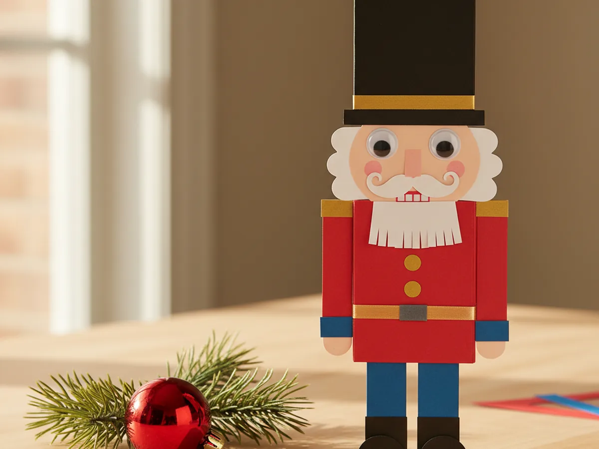
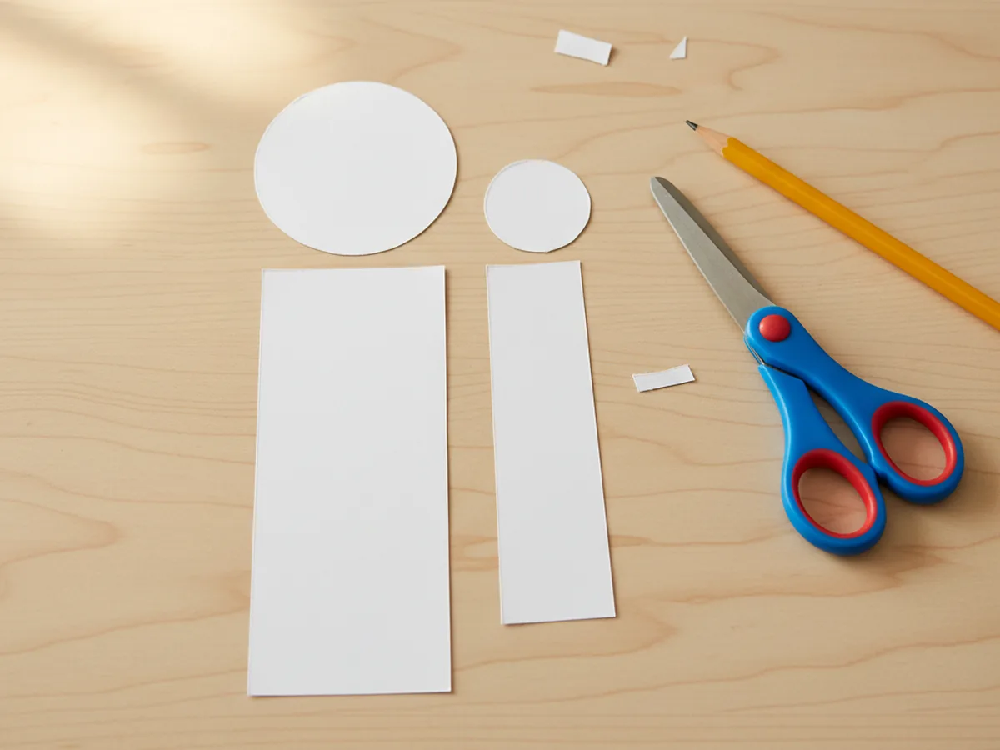
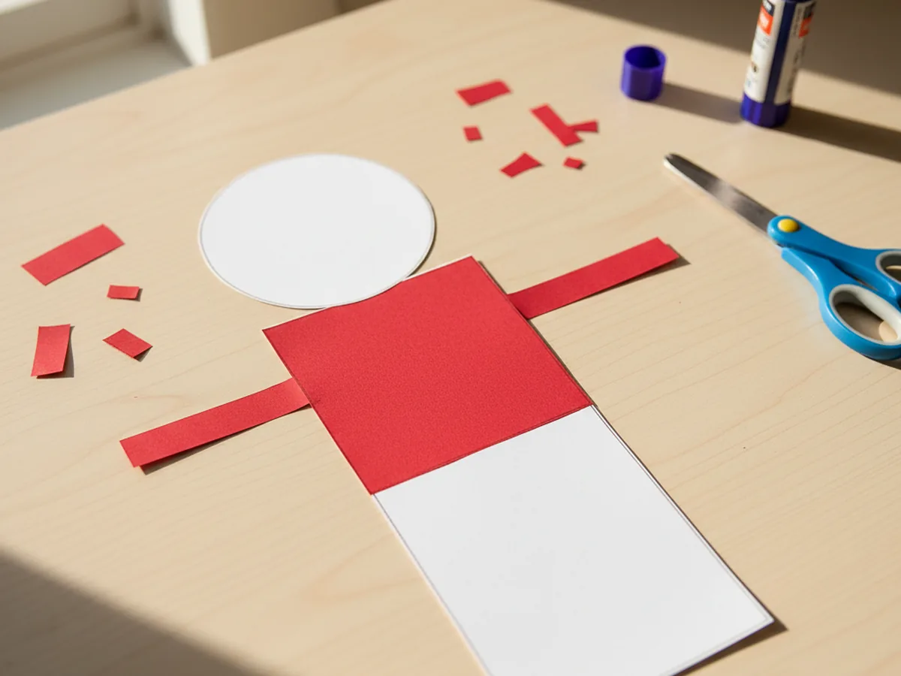
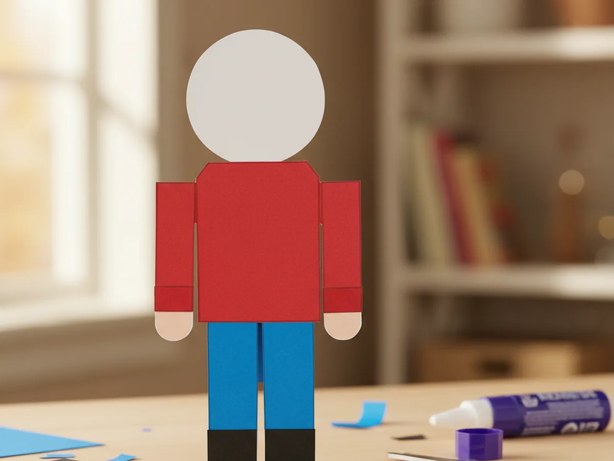
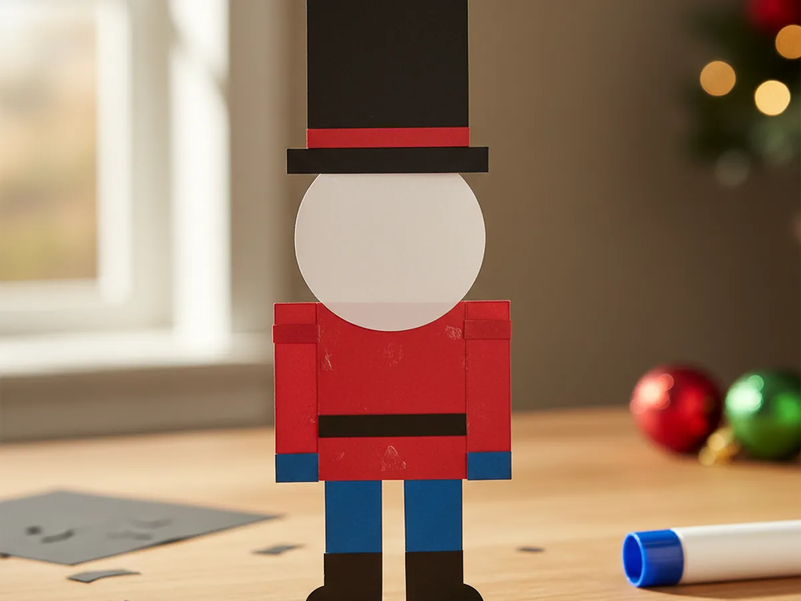
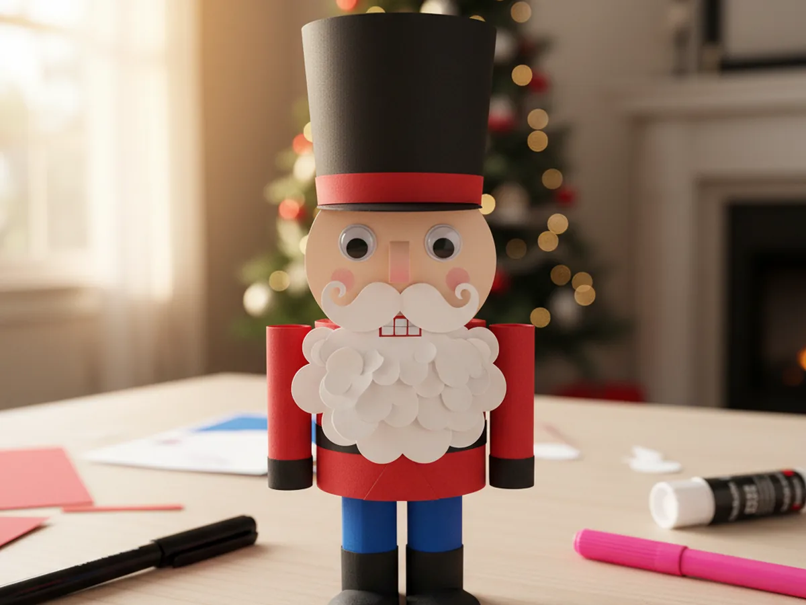
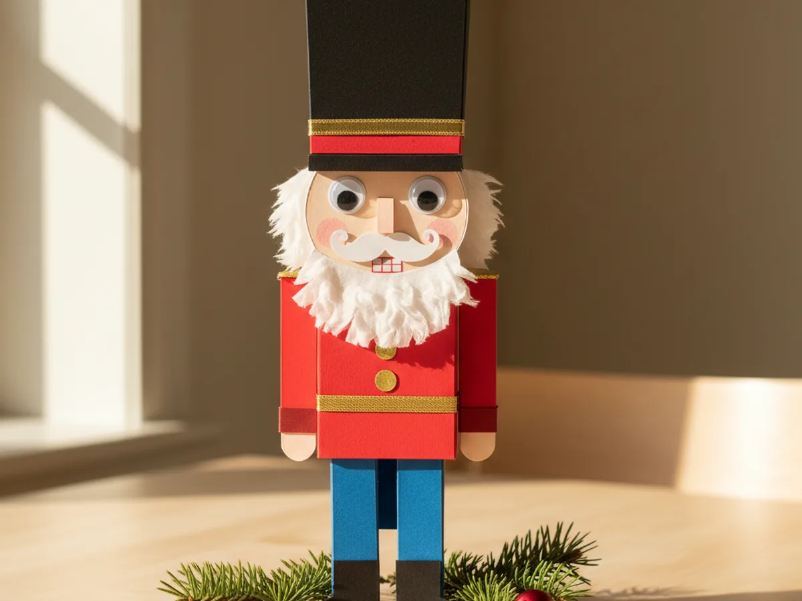

If your little one loves the magic of Christmas and lights up at the sight of a tall painted toy soldier, this nutcracker paper craft is going to feel like a tiny holiday miracle on the kitchen table. With a few sheets of red, blue, white, and black construction paper, a glue stick, and a bit of cozy together time, you can build a sweet little nutcracker soldier from scratch and watch your child gasp the moment the tall black hat goes on top. 🎄
The best part is that this paper nutcracker craft is a layered project, not a freehand drawing challenge. Every part is built from simple cut shapes you glue one on top of the next, so even preschoolers can follow along. It is the kind of low-stress, low-mess Christmas project that turns a quiet afternoon into a real memory, and it ends with a tiny painted soldier your child will want to march along the windowsill.
Why Kids Love This Craft
Kids love this nutcracker paper craft because it builds into a character right in front of their eyes. There is something magical about the way a few flat shapes turn into a tall, dignified little soldier with rosy cheeks and a serious face. Toddlers and preschoolers light up at the moment the hat goes on, the beard appears, and the buttons go down the coat. It feels less like crafting and more like bringing a tiny friend to life.
There is also a quiet developmental side to this Christmas nutcracker craft that makes it a wonderful pick for young children. Cutting simple rectangles and circles builds scissor confidence with easy, forgiving shapes. Layering the coat, the pants, and the hat in the right order teaches sequencing and gentle planning. Adding the small face details practices the kind of careful fine motor placement that helps with early writing later. The whole craft is a string of small confident wins.
And then there is the moment when your child holds up the finished nutcracker soldier and proudly announces his name. That sweet flash of pride is exactly what makes a regular December afternoon feel like a memory worth keeping. 💚
What You'll Need
Here is everything you need to make this nutcracker paper craft together at home. Lay all the supplies out on a clean table before your child sits down so the whole project flows smoothly without anyone hunting for the glue stick mid step.
- Crayola Construction Paper (240 Sheets, 12 Colors), includes the red, blue, white, and black sheets you need for the soldier's coat, pants, face, and tall hat.
- Astrobrights Colored Cardstock Primary 5-Color Assortment, sturdy 65 lb cardstock for the body base that gives the nutcracker structure to stand up.
- Fiskars 5 Inch Pointed-Tip Kids Scissors, safe blades that cut clean rectangles and small details without frustrating little hands.
- Elmer's Disappearing Purple Washable Glue Sticks (18 Pack), dries clear so the layered pieces look clean, washes off little fingers easily.
- Crayola Broad Line Markers (10 Classic Colors), for drawing the small mouth, rosy cheeks, and tiny details on the soldier's face.
- DECORA Self-Adhesive Googly Eyes, 10mm, peel and stick so kids can place the eyes in the exact spot they want.
- MEEDEE Gold Wired Metallic Ribbon, 1 Inch, for cutting a small gold band across the hat and a thin gold belt at the waist.
- A pencil, for lightly sketching the rectangles before cutting.
Step-by-Step Instructions
This nutcracker paper craft comes together in six gentle steps that even a 4 year old can follow with a little help. Take it slowly, hand over the easy parts, and enjoy watching your soldier come to life. ✨
Step 1: Cut the Body Base and Head
Start by cutting two simple shapes from white cardstock. Cut one rectangle about four inches tall and two inches wide for the body, and one circle about two inches across for the head. These two pieces become the bones of your paper nutcracker, so they do not need to be fancy at all. Set them on the table side by side, with the round head sitting just above the long rectangle, so your child can see how the soldier will be built.

Step 2: Add the Red Jacket and Sleeves
Now bring out the bright red construction paper. Cut a smaller red rectangle about two and a half inches tall to cover the top half of the white body, and glue it down so it lines up at the shoulders. Then cut two skinny red strips for the sleeves and glue one on each side of the body. Your nutcracker paper craft is starting to look like a proper little soldier already, and this is usually the first moment your child gets really excited.

Step 3: Glue On the Blue Pants and Black Boots
Time to dress the lower half. Cut a blue rectangle the same width as the red jacket and glue it onto the bottom half of the white body so the soldier has a clear pair of pants. Then cut two small black rectangles for boots and glue them just under the pants so they peek out at the bottom. If you want, you can leave a tiny gap in the middle of the blue rectangle so it looks more like two separate trouser legs. These tiny details make the paper nutcracker craft feel official.

Step 4: Build the Tall Black Hat
This is the step your child will be waiting for. Cut a tall black rectangle about three inches tall and slightly wider than the head, and glue it directly above the white circle so it becomes the iconic tall nutcracker hat. Then cut a thin red strip the width of the hat and glue it across the bottom of the hat as a band. Your soldier is suddenly recognizable and standing proud. Try not to laugh when your child whispers, in awe, that it really looks like a nutcracker now.

Step 5: Add the Beard, Mustache, and Face
Now for the personality. Cut a small fluffy white beard shape, about an inch tall, and glue it onto the lower half of the round head. Cut a tiny white mustache, just a small horizontal cloud shape, and glue it right above the beard. Press two self-adhesive googly eyes onto the top half of the face. Finally, use a black marker to draw a small mouth and a pink marker to dot two rosy cheeks. Suddenly the Christmas nutcracker craft has a face, and the whole project comes alive.

Step 6: Add Gold Buttons and Trim
Time for the finishing touches that take your nutcracker paper craft from cute to display-worthy. Cut three or four small gold paper circles and glue them in a vertical line down the front of the red jacket as buttons. Cut a thin strip of gold ribbon and glue it across the waist as a belt, then add another thin gold strip across the bottom band of the hat. Step back together and admire your finished little soldier standing proud on the craft table. 🎁

Variations to Try
Toilet Paper Roll Nutcracker: Wrap the same colored paper pieces around an empty toilet paper roll instead of using a flat cardstock base. The finished soldier stands up on its own and looks adorable lined up along a fireplace mantel or holiday window ledge. Perfect for turning the craft into a real little Christmas decoration.
Mini Nutcracker Garland: Make four or five tiny versions of the soldier on small strips of cardstock, then punch a hole in the top of each hat and string them onto baker's twine. Hang the finished garland across your child's bedroom door or above the play kitchen for a sweet personalized holiday touch.
Nutcracker Ornament: Shrink the whole project down to about half the size, add a small loop of ribbon at the top of the hat, and hang the finished soldier on your Christmas tree. Write your child's name and the year on the back so it becomes a keepsake ornament you will smile at for years.
Final Thoughts
This nutcracker paper craft is the kind of project that quietly turns into a holiday favorite. It uses materials you probably already have on hand, the steps are forgiving enough for a wiggly preschooler, and the finished little soldier keeps giving back through December in pretend Christmas parades, fridge displays, and tiny window-ledge marches. Watching your child show off the soldier they made with their own hands is one of those simple parenting wins that sticks with you.
If your little one enjoyed this paper nutcracker, save the tutorial on Pinterest so you can come back to it the next time the Christmas season rolls around. Happy crafting, friend.
More Crafts You'll Love
If your child loved making this paper nutcracker, they will love these other adorable Christmas paper projects next: